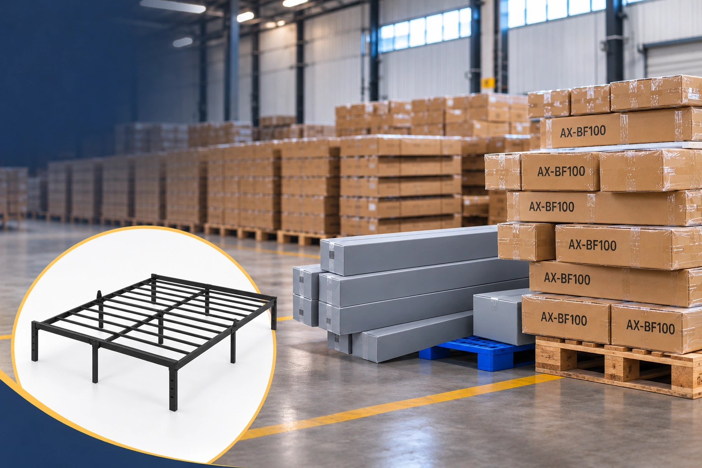
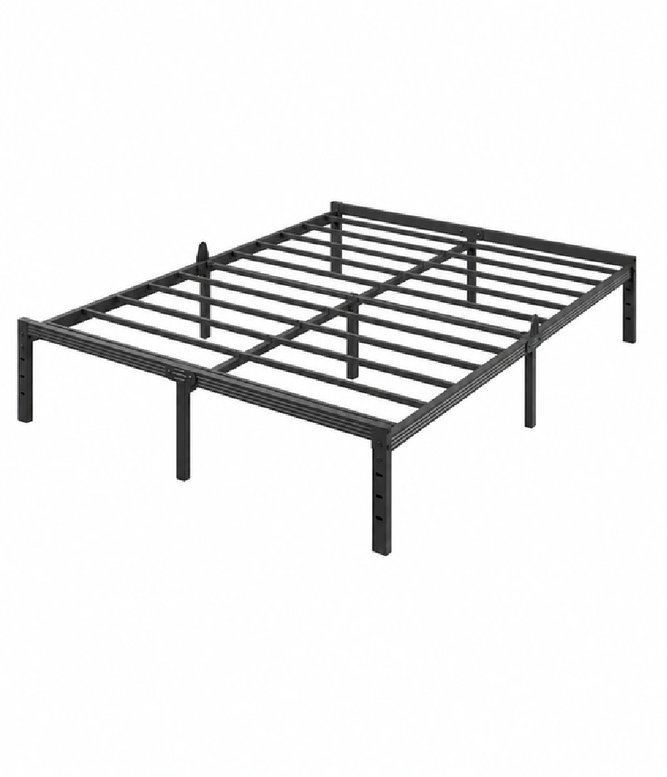
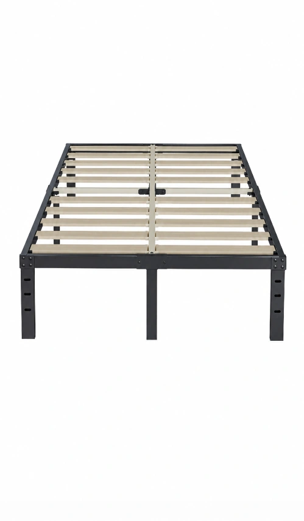
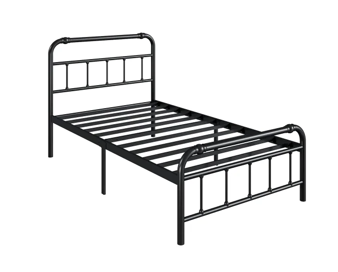
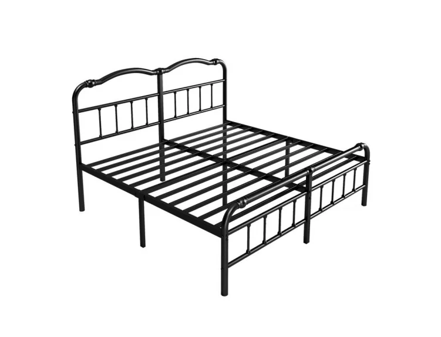
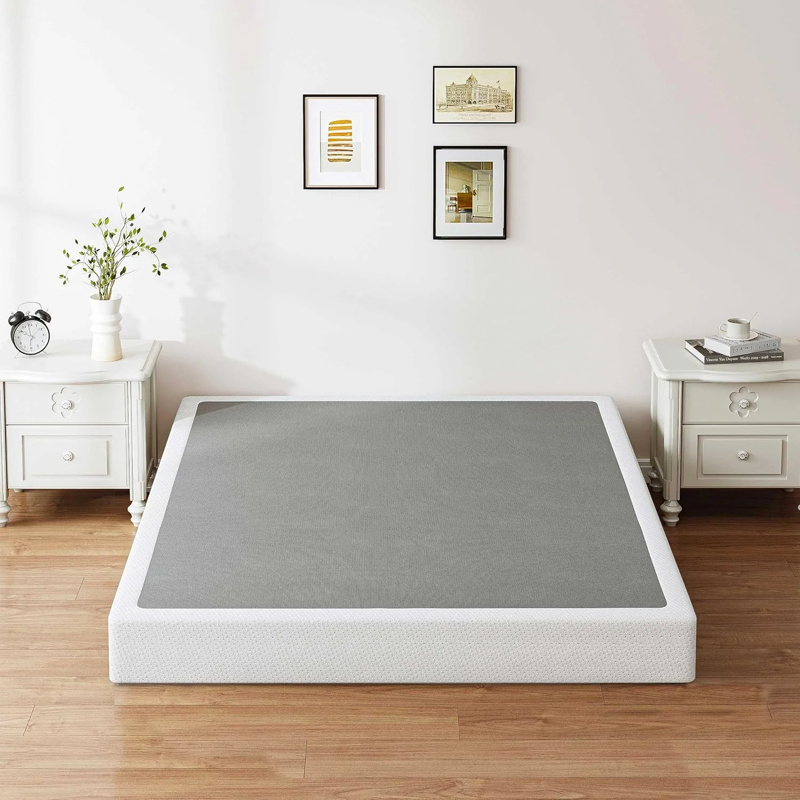
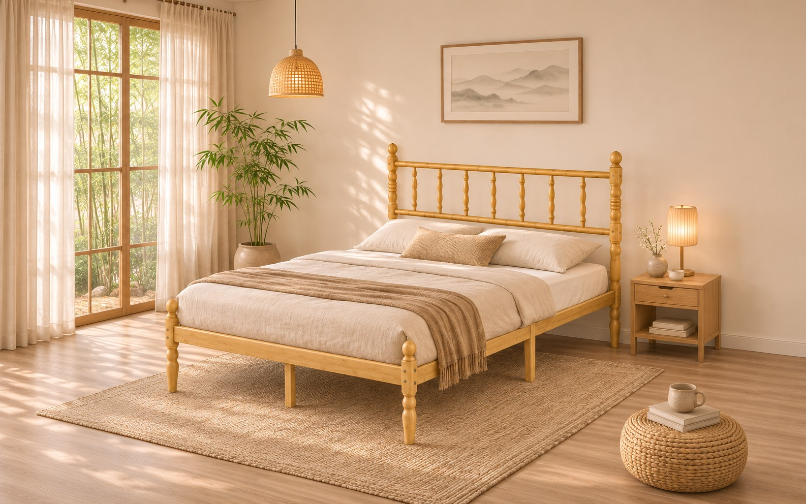
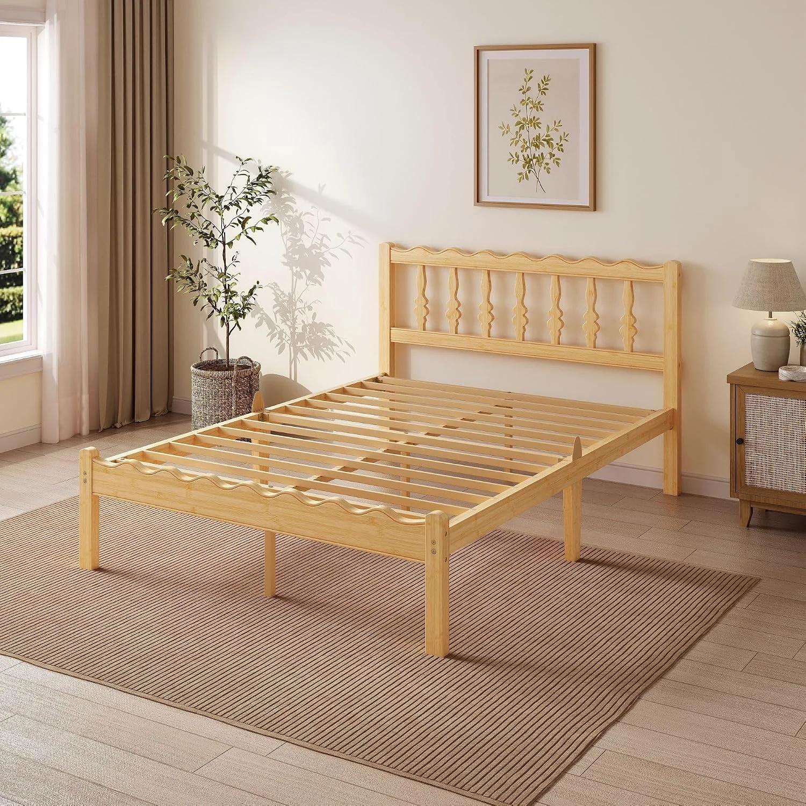
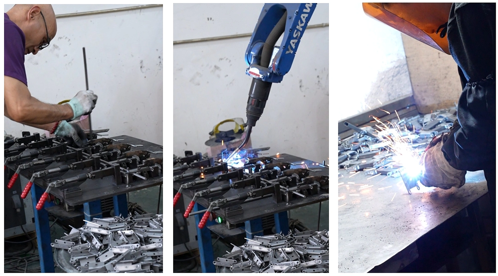

U.S. Local Inventory
Selected models and sizes are available for domestic fulfillment.
Manufacturer-Direct Supply. U.S. Local Fulfillment. Flexible B2B Purchasing.
Selected Apexnix bed frame models are stocked in our U.S. warehouse to help retailers, distributors, e-commerce sellers, hospitality buyers and property operators start with practical commercial quantities, replenish faster and reduce dependence on long overseas lead times.

Selected models and sizes are available for domestic fulfillment.
Start with practical commercial quantities without committing to a full-container program.
Respond to market demand without waiting through another long overseas supply cycle.
Work directly with Apexnix for product selection, quotation, after-sales coordination and future supply planning.
A clear five-step route from product selection to domestic dispatch.
Choose the series, size and quantity.
Apexnix confirms current U.S. inventory.
Freight is calculated according to order quantity, carton configuration and delivery ZIP code.
PI and payment terms are confirmed.
The warehouse releases the order for domestic delivery.
Start with local stock when speed and flexibility matter. As demand grows, larger factory-direct or customized programs can be discussed separately.
Seven selected product directions for B2B purchasing and replenishment.

A practical platform structure designed for retail, rental, hospitality and replenishment programs.
Explore HB35 Series
A steel-and-wood platform structure built for practical support, straightforward assembly and market-ready B2B programs.
Explore W400 Series
A decorative metal bed direction that adds a more traditional bedroom presence while keeping a practical platform structure.
Explore RHF Series
A vintage-inspired metal bed with an arched profile, simple geometric detailing and practical storage-friendly clearance.
Explore RHF32C-A Series
A dedicated mattress foundation program, separated from standard platform beds and designed for flexible retail and commercial supply.
Explore SBS Series
A spindle-style bamboo bed direction that combines natural material appeal with distinctive bedroom character.
Explore ZYH Series
A clean bamboo platform bed with a soft wave-shaped headboard and practical details for natural-style product lines.
Explore ZYW SeriesThe U.S. stock program is backed by practical bed frame manufacturing and packaging capability. Real production image shows how components move from processing to welding, surface finishing, assembly preparation and flat-pack packing.

Local replenishment, product testing and practical commercial purchasing.
Local availability for smaller programs, with a path to repeat and larger-volume supply.
Market-ready products, flat-pack handling and faster replenishment for online channels.
Room replacement, furnished rental, accommodation and phased project requirements.
Local stock is designed to help buyers move faster with selected standard products. For larger-volume programs, repeat purchasing or differentiated products, Apexnix can also support factory-direct supply, private-label packaging and OEM / custom development.
Tell us the model, quantity and delivery ZIP code to receive a tailored U.S. stock quotation.
Explore factory-direct products and OEM support
Request a U.S. Stock QuoteNo. The U.S. stock program covers selected models, sizes and configurations. Current inventory is confirmed before quotation.
The program is designed for flexible commercial purchasing, including smaller B2B replenishment and project orders. Final quantity acceptance depends on the selected SKU and current stock.
Freight is quoted separately according to order quantity, carton configuration and delivery ZIP code.
Yes. Buyers can use local stock to test products, replenish quickly or cover urgent needs, then discuss larger factory-direct programs as demand grows.
Local inventory follows existing specifications. Customized size, finish, structure, labels or packaging should be discussed as a separate OEM / custom program.
Apexnix reviews after-sales cases according to the specific issue and can coordinate appropriate solutions such as parts support, replacement or return handling when applicable.
Share the product series, size, quantity and delivery ZIP code. Current inventory and domestic freight will be confirmed before quotation.